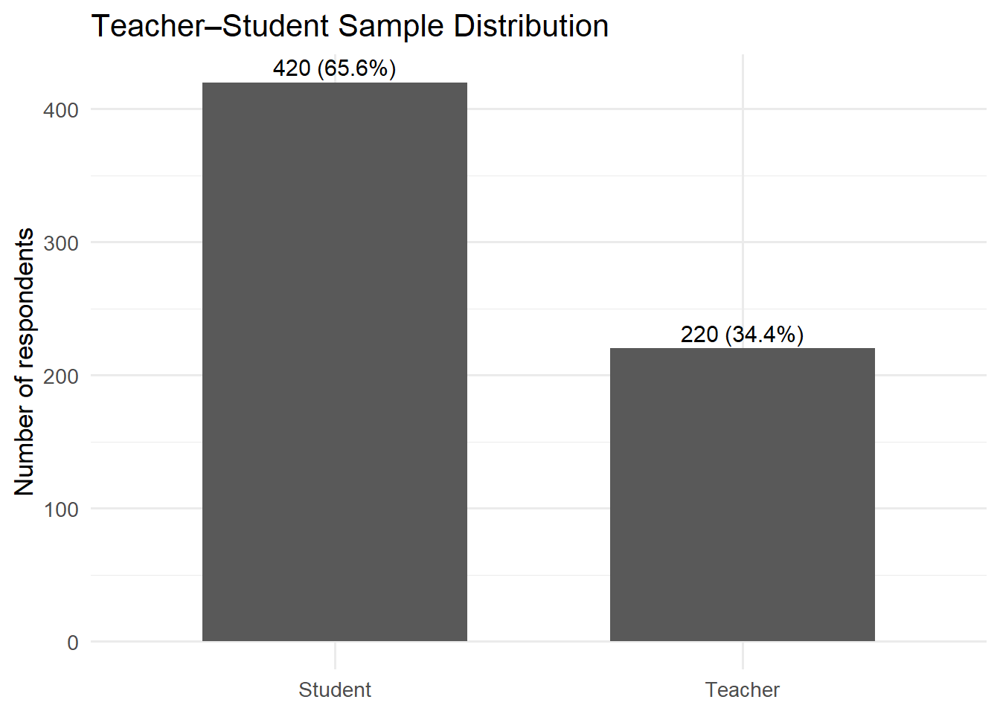
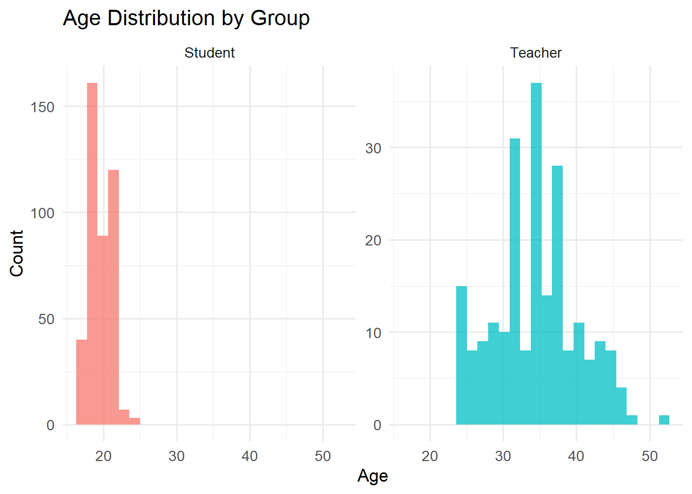
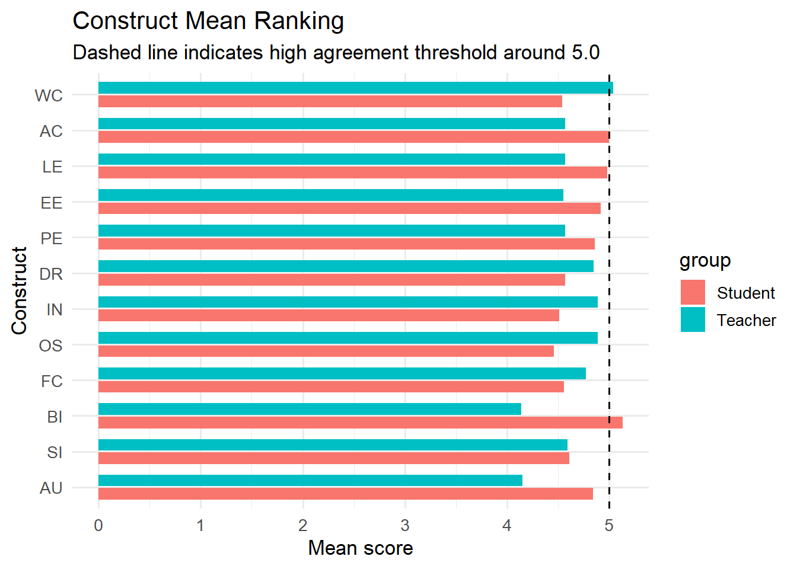
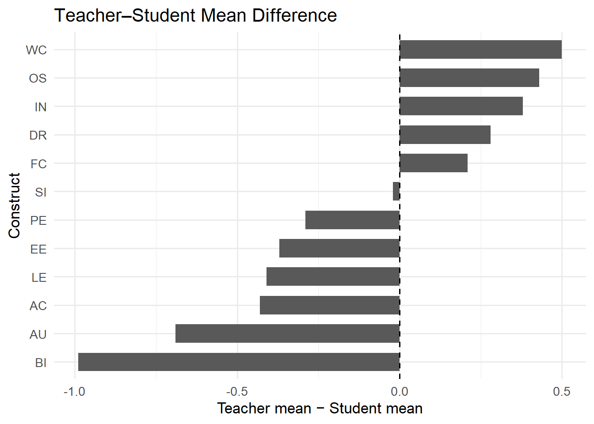
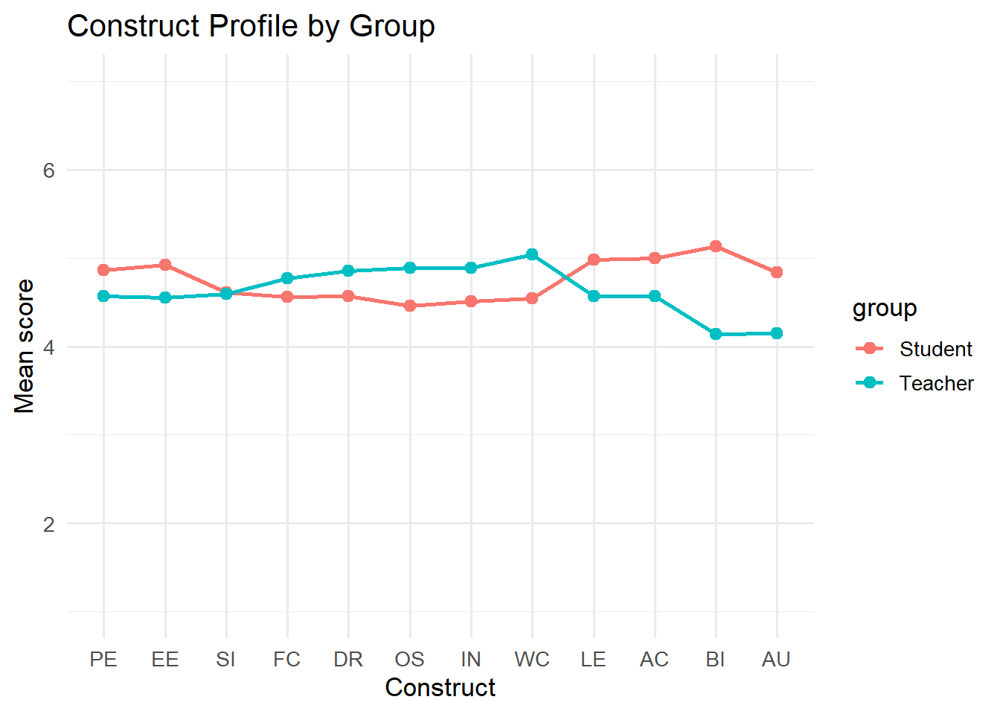
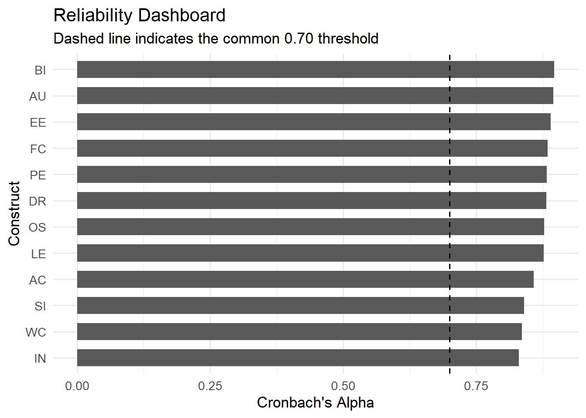
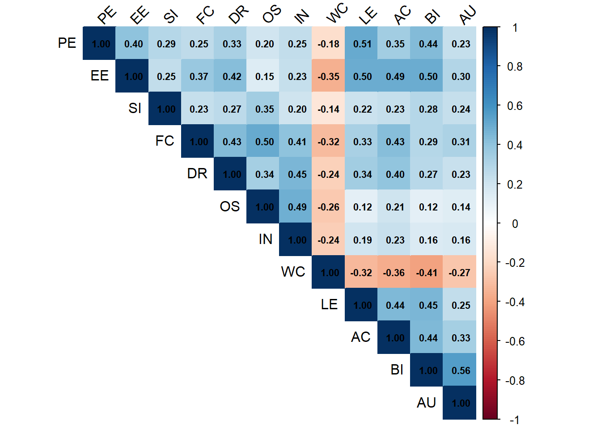
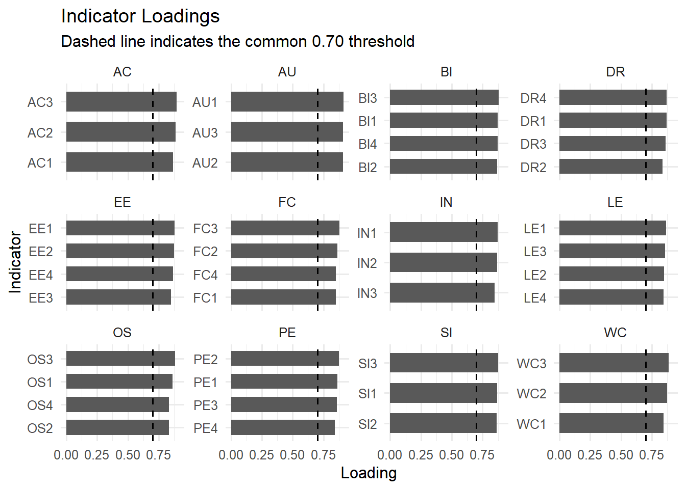
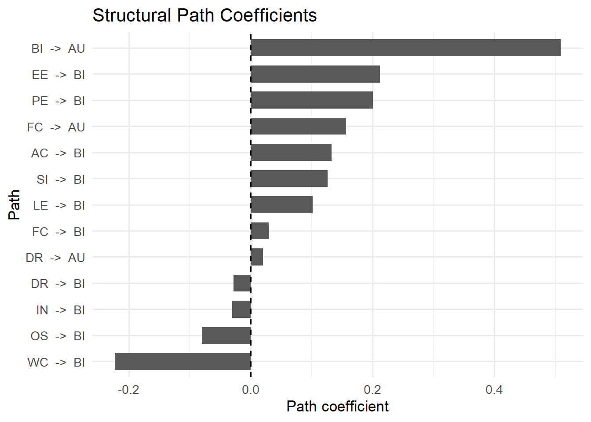
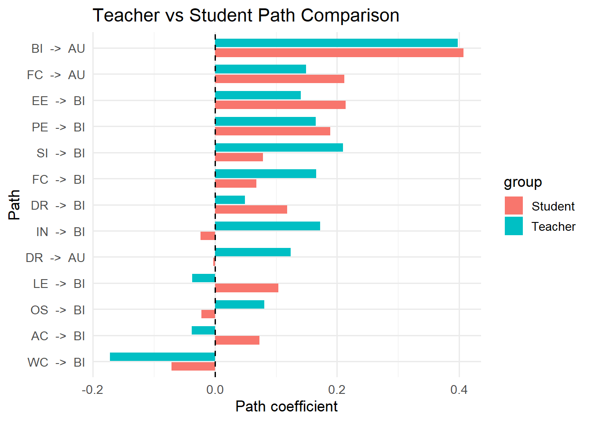

flowchart LR PE[Performance Expectancy] EE[Effort Expectancy] SI[Social Influence] FC[Facilitating Conditions] DR[Digital Readiness] OS[Organizational Support] IN[System Integration] WC[Workload Concern] LE[Learning Effectiveness] AC[Accessibility] BI[Behavioral Intention] AU[Actual Use] PE --> BI EE --> BI SI --> BI FC --> BI DR --> BI OS --> BI IN --> BI WC --> BI LE --> BI AC --> BI BI --> AU FC --> AU DR --> AU
Case Study 2: CDIO-Based Digital Assessment Adoption
Teacher–Student Comparative Analysis with Descriptive Analytics, Visualization, and PLS-SEM
Overview
NoteCase Purpose
This case study demonstrates a complete research workflow using a synthetic CDIO digital assessment adoption dataset.
The workflow is:
Research problem
→ Dataset inspection
→ Descriptive analysis
→ Teacher–student comparison
→ Reliability analysis
→ Correlation analysis
→ PLS-SEM
→ Results interpretation
→ Practical implicationsCase Study Information
| Item | Description |
|---|---|
| Research area | Digital assessment adoption |
| Context | CDIO-based education |
| Method | Descriptive analysis, visualization, reliability, PLS-SEM |
| Comparison | Teachers vs Students |
| Dataset | Synthetic teaching dataset |
| File path | data/case-studies/CDIO/cdio_adoption_dataset.xlsx |
| Main tool | R |
WarningImportant Note
This dataset is synthetic. It was generated for teaching, training, and replication practice.
It should not be treated as real survey evidence.
Research Problem
CDIO-based digital assessment systems can improve feedback, learning alignment, and assessment transparency. However, teachers and students may adopt such systems for different reasons.
This case study asks:
What factors influence teachers’ and students’ behavioral intention and actual use of a CDIO-based digital assessment system?
Conceptual Logic
TipWhy This Model?
The model combines technology acceptance logic with CDIO implementation concerns.
- Teachers may care more about organizational support, system integration, and workload.
- Students may care more about usefulness, ease of use, learning effectiveness, and accessibility.
Setup
library(tidyverse)
library(readxl)
library(psych)
library(corrplot)
library(seminr)
library(patchwork)
library(scales)Step 1. Import and Inspect the Dataset
TipWhy Are We Doing This?
Before analysis, we must confirm that the dataset is available, readable, and structured correctly.
This step answers:
- How many respondents are included?
- How many variables are included?
- Are teachers and students both represented?
- Are Likert indicators numeric?
cdio_data <- readxl::read_excel(
"data/case-studies/CDIO/cdio_adoption_dataset.xlsx",
sheet = "Data"
)
dplyr::glimpse(cdio_data)Rows: 640
Columns: 51
$ respondent_id <dbl> 1, 2, 3, 4, 5, 6, 7, 8, 9, 10, 11, 12, 13, 14, …
$ group <chr> "Teacher", "Teacher", "Teacher", "Teacher", "Te…
$ campus <chr> "Can Tho", "Ho Chi Minh City", "Ha Noi", "Can T…
$ gender <chr> "Male", "Male", "Female", "Female", "Female", "…
$ age <dbl> 32, 32, 31, 27, 35, 34, 39, 44, 42, 42, 38, 36,…
$ experience_years <dbl> 10, 1, 6, 8, 5, 4, 9, 9, 9, 5, 6, 5, 8, 11, 15,…
$ cdio_training <chr> "Yes", "No", "No", "No", "No", "Yes", "No", "No…
$ prior_digital_tool_use <chr> "Medium", "Low", "High", "High", "Low", "Low", …
$ PE1 <dbl> 5, 5, 6, 5, 4, 4, 5, 5, 5, 5, 5, 5, 5, 6, 5, 5,…
$ PE2 <dbl> 5, 6, 6, 6, 5, 4, 5, 6, 4, 6, 4, 5, 5, 5, 5, 4,…
$ PE3 <dbl> 4, 5, 7, 4, 4, 4, 4, 5, 4, 5, 4, 5, 5, 5, 5, 3,…
$ PE4 <dbl> 5, 5, 6, 6, 4, 4, 3, 6, 3, 5, 5, 4, 5, 5, 6, 3,…
$ EE1 <dbl> 5, 5, 6, 5, 5, 5, 4, 4, 5, 5, 4, 5, 6, 4, 4, 4,…
$ EE2 <dbl> 5, 4, 5, 5, 7, 4, 6, 5, 5, 5, 3, 4, 6, 4, 5, 5,…
$ EE3 <dbl> 4, 4, 5, 5, 6, 4, 5, 5, 5, 5, 3, 4, 6, 3, 3, 5,…
$ EE4 <dbl> 5, 4, 5, 5, 6, 4, 5, 5, 5, 6, 3, 4, 6, 4, 5, 5,…
$ SI1 <dbl> 5, 5, 6, 4, 6, 4, 6, 5, 5, 5, 5, 6, 5, 5, 4, 3,…
$ SI2 <dbl> 6, 6, 6, 5, 5, 5, 5, 4, 4, 5, 5, 6, 5, 4, 5, 4,…
$ SI3 <dbl> 4, 4, 7, 5, 5, 4, 6, 3, 4, 5, 5, 6, 4, 4, 5, 3,…
$ FC1 <dbl> 5, 4, 5, 6, 5, 4, 5, 4, 5, 5, 5, 6, 5, 5, 6, 4,…
$ FC2 <dbl> 5, 5, 4, 5, 5, 4, 6, 5, 4, 5, 6, 6, 5, 4, 4, 4,…
$ FC3 <dbl> 5, 5, 5, 5, 6, 4, 6, 4, 4, 5, 4, 6, 4, 5, 5, 4,…
$ FC4 <dbl> 6, 5, 5, 5, 5, 4, 6, 4, 4, 6, 4, 7, 4, 5, 6, 4,…
$ DR1 <dbl> 5, 7, 5, 6, 5, 4, 5, 5, 5, 5, 4, 6, 6, 4, 5, 5,…
$ DR2 <dbl> 5, 5, 5, 7, 6, 4, 5, 5, 4, 5, 3, 6, 6, 4, 4, 5,…
$ DR3 <dbl> 5, 6, 5, 6, 5, 4, 6, 5, 4, 6, 4, 6, 6, 5, 5, 5,…
$ DR4 <dbl> 5, 6, 5, 6, 6, 4, 3, 5, 5, 5, 4, 6, 6, 4, 6, 5,…
$ OS1 <dbl> 5, 4, 6, 5, 6, 5, 7, 4, 5, 4, 5, 6, 5, 4, 5, 6,…
$ OS2 <dbl> 5, 4, 5, 5, 6, 5, 6, 5, 5, 5, 6, 6, 4, 4, 5, 5,…
$ OS3 <dbl> 5, 5, 6, 6, 6, 4, 6, 4, 5, 4, 6, 5, 5, 4, 5, 5,…
$ OS4 <dbl> 4, 4, 5, 5, 6, 4, 6, 5, 5, 5, 5, 6, 5, 4, 6, 6,…
$ IN1 <dbl> 4, 6, 6, 6, 6, 5, 5, 6, 4, 5, 6, 6, 5, 4, 5, 6,…
$ IN2 <dbl> 4, 5, 6, 5, 6, 5, 5, 6, 5, 5, 4, 7, 5, 4, 7, 5,…
$ IN3 <dbl> 4, 6, 6, 6, 6, 4, 6, 6, 4, 6, 5, 6, 5, 5, 6, 6,…
$ WC1 <dbl> 5, 5, 4, 5, 3, 6, 5, 6, 4, 4, 6, 4, 5, 5, 4, 4,…
$ WC2 <dbl> 6, 4, 5, 6, 5, 5, 5, 5, 4, 4, 6, 5, 5, 4, 3, 5,…
$ WC3 <dbl> 5, 5, 4, 6, 5, 6, 4, 6, 3, 4, 6, 4, 5, 5, 4, 5,…
$ LE1 <dbl> 5, 6, 5, 5, 5, 5, 4, 4, 5, 4, 3, 5, 5, 6, 5, 4,…
$ LE2 <dbl> 5, 5, 5, 4, 5, 4, 5, 6, 5, 4, 3, 6, 5, 6, 5, 4,…
$ LE3 <dbl> 4, 4, 5, 5, 4, 5, 5, 5, 5, 5, 3, 6, 5, 4, 4, 4,…
$ LE4 <dbl> 5, 5, 5, 3, 5, 5, 5, 4, 4, 5, 4, 5, 5, 6, 4, 4,…
$ AC1 <dbl> 5, 5, 5, 4, 5, 4, 5, 5, 5, 4, 4, 5, 3, 4, 5, 4,…
$ AC2 <dbl> 5, 6, 5, 5, 4, 3, 5, 5, 6, 4, 4, 5, 4, 5, 4, 5,…
$ AC3 <dbl> 5, 6, 6, 4, 4, 3, 5, 6, 5, 4, 3, 5, 4, 5, 5, 4,…
$ BI1 <dbl> 4, 5, 6, 4, 4, 3, 4, 4, 4, 5, 4, 6, 3, 4, 5, 4,…
$ BI2 <dbl> 4, 5, 6, 4, 5, 3, 4, 5, 3, 5, 3, 5, 4, 4, 5, 4,…
$ BI3 <dbl> 4, 5, 5, 4, 5, 4, 3, 5, 3, 5, 4, 5, 4, 4, 5, 3,…
$ BI4 <dbl> 5, 4, 5, 5, 4, 3, 3, 4, 4, 5, 3, 7, 5, 4, 5, 5,…
$ AU1 <dbl> 7, 4, 5, 6, 5, 3, 4, 3, 5, 5, 5, 6, 4, 3, 6, 3,…
$ AU2 <dbl> 7, 3, 5, 5, 5, 4, 4, 4, 5, 6, 4, 5, 4, 5, 6, 2,…
$ AU3 <dbl> 7, 3, 5, 5, 5, 4, 4, 4, 5, 4, 4, 7, 4, 4, 5, 3,…
NoteWhat Should We Check?
Check:
group: Teacher or Student- demographic variables:
campus,gender,age - indicator variables:
PE1,EE1,BI1,AU1, etc. - Likert items should be numeric from 1 to 7.
If the Dataset Looks Correct
Continue to sample description and data diagnostics.
WarningIf There Is an Error
Common fixes:
- Check file path and folder name:
CDIOmust match your folder name. - Check Excel sheet name: it should be
Data. - Check whether the file is open in Excel.
- Check whether the file name is exactly
cdio_adoption_dataset.xlsx.
Step 2. Sample Description
TipWhy Are We Doing This?
A good empirical report must describe the sample.
For this case, the key comparison is between teachers and students.
sample_table <- cdio_data |>
dplyr::count(group, name = "n") |>
dplyr::mutate(percent = round(n / sum(n) * 100, 1))
sample_tableFigure 1. Teacher–Student Sample Distribution
fig_sample <- sample_table |>
ggplot2::ggplot(
ggplot2::aes(
x = group,
y = n
)
) +
ggplot2::geom_col(width = 0.65) +
ggplot2::geom_text(
ggplot2::aes(label = paste0(n, " (", percent, "%)")),
vjust = -0.4,
size = 4
) +
ggplot2::labs(
x = NULL,
y = "Number of respondents",
title = "Teacher–Student Sample Distribution"
) +
ggplot2::theme_minimal(base_size = 13)
fig_sample
ImportantReference
For group comparison, each group should ideally have enough observations.
A practical rule:
| Group size | Interpretation |
|---|---|
| < 50 | Weak for group comparison |
| 50–100 | Usable but limited |
| > 100 | Better |
| > 200 | Strong for teaching/demo analysis |
Step 3. Age and Respondent Profile
TipWhy Are We Doing This?
Age and role differences help learners understand whether teachers and students represent different respondent populations.
cdio_data |>
dplyr::group_by(group) |>
dplyr::summarise(
n = dplyr::n(),
mean_age = round(mean(age, na.rm = TRUE), 2),
sd_age = round(sd(age, na.rm = TRUE), 2),
min_age = min(age, na.rm = TRUE),
max_age = max(age, na.rm = TRUE),
.groups = "drop"
)Figure 2. Age Distribution by Group
fig_age <- cdio_data |>
ggplot2::ggplot(
ggplot2::aes(
x = age,
fill = group
)
) +
ggplot2::geom_histogram(
bins = 25,
alpha = 0.75,
position = "identity"
) +
ggplot2::facet_wrap(~group, scales = "free_y") +
ggplot2::labs(
x = "Age",
y = "Count",
title = "Age Distribution by Group"
) +
ggplot2::theme_minimal(base_size = 13) +
ggplot2::theme(legend.position = "none")
fig_age
NoteWhat Should We Learn?
Teachers and students are expected to differ in age and experience.
This is not a problem. It is part of the research context.
Step 4. Missing Value Diagnostics
TipWhy Are We Doing This?
Missing values can distort descriptive statistics, reliability estimates, and SEM results.
missing_table <- cdio_data |>
dplyr::summarise(
dplyr::across(
dplyr::everything(),
~ sum(is.na(.x))
)
) |>
tidyr::pivot_longer(
cols = dplyr::everything(),
names_to = "variable",
values_to = "missing_n"
) |>
dplyr::mutate(
missing_percent = round(missing_n / nrow(cdio_data) * 100, 2)
) |>
dplyr::arrange(desc(missing_percent))
missing_table |>
dplyr::filter(missing_n > 0)
ImportantMissing Value Reference
| Missing percentage | Interpretation |
|---|---|
| 0% | Ideal |
| < 5% | Usually acceptable |
| 5–10% | Requires attention |
| > 10% | Serious issue |
If Missing Values Are Low
Continue to descriptive analysis.
WarningIf Missing Values Are High
Possible actions:
- Check raw data.
- Identify whether missingness is random.
- Use appropriate imputation.
- Remove cases only when justified.
Step 5. Construct Scores
TipWhy Are We Doing This?
SEM uses latent constructs, but descriptive analysis often uses construct mean scores.
Construct scores summarize multiple indicators into one interpretable score.
construct_map <- list(
PE = c("PE1", "PE2", "PE3", "PE4"),
EE = c("EE1", "EE2", "EE3", "EE4"),
SI = c("SI1", "SI2", "SI3"),
FC = c("FC1", "FC2", "FC3", "FC4"),
DR = c("DR1", "DR2", "DR3", "DR4"),
OS = c("OS1", "OS2", "OS3", "OS4"),
IN = c("IN1", "IN2", "IN3"),
WC = c("WC1", "WC2", "WC3"),
LE = c("LE1", "LE2", "LE3", "LE4"),
AC = c("AC1", "AC2", "AC3"),
BI = c("BI1", "BI2", "BI3", "BI4"),
AU = c("AU1", "AU2", "AU3")
)
cdio_scores <- cdio_data
for (construct in names(construct_map)) {
cdio_scores[[construct]] <- rowMeans(
cdio_scores[, construct_map[[construct]]],
na.rm = TRUE
)
}
construct_scores_long <- cdio_scores |>
dplyr::select(group, dplyr::all_of(names(construct_map))) |>
tidyr::pivot_longer(
cols = -group,
names_to = "construct",
values_to = "score"
)
construct_mean <- construct_scores_long |>
dplyr::group_by(group, construct) |>
dplyr::summarise(
mean = round(mean(score, na.rm = TRUE), 2),
sd = round(sd(score, na.rm = TRUE), 2),
.groups = "drop"
)
construct_mean
ImportantLikert Mean Reference
For 1–7 scales:
| Mean score | Interpretation |
|---|---|
| 1.00–2.99 | Low |
| 3.00–4.99 | Moderate |
| 5.00–7.00 | High |
Step 6. Construct Ranking
TipWhy Are We Doing This?
Construct ranking helps identify the strongest and weakest perceived adoption factors.
Figure 3. Construct Mean Ranking
fig_construct_ranking <- construct_mean |>
ggplot2::ggplot(
ggplot2::aes(
x = reorder(construct, mean),
y = mean,
fill = group
)
) +
ggplot2::geom_col(position = ggplot2::position_dodge(width = 0.75), width = 0.65) +
ggplot2::coord_flip() +
ggplot2::geom_hline(yintercept = 5, linetype = "dashed") +
ggplot2::labs(
x = "Construct",
y = "Mean score",
title = "Construct Mean Ranking",
subtitle = "Dashed line indicates high agreement threshold around 5.0"
) +
ggplot2::theme_minimal(base_size = 13)
fig_construct_ranking
If Scores Are High
High scores suggest favorable perceptions.
For example:
- High PE means respondents believe the system is useful.
- High EE means respondents find the system easy to use.
- High BI means respondents intend to use the system.
WarningIf Scores Are Low
Low scores suggest possible implementation barriers.
Possible actions:
- Improve training.
- Improve usability.
- Improve infrastructure.
- Reduce workload burden.
- Strengthen institutional support.
Step 7. Teacher–Student Difference Plot
TipWhy Are We Doing This?
A key purpose of this case is to compare teachers and students.
This helps identify whether the same system is perceived differently by different stakeholder groups.
group_difference <- construct_mean |>
dplyr::select(group, construct, mean) |>
tidyr::pivot_wider(
names_from = group,
values_from = mean
) |>
dplyr::mutate(
difference_teacher_minus_student = round(Teacher - Student, 2)
) |>
dplyr::arrange(desc(abs(difference_teacher_minus_student)))
group_differenceFigure 4. Teacher–Student Mean Difference
fig_group_difference <- group_difference |>
ggplot2::ggplot(
ggplot2::aes(
x = reorder(construct, difference_teacher_minus_student),
y = difference_teacher_minus_student
)
) +
ggplot2::geom_col(width = 0.65) +
ggplot2::geom_hline(yintercept = 0, linetype = "dashed") +
ggplot2::coord_flip() +
ggplot2::labs(
x = "Construct",
y = "Teacher mean − Student mean",
title = "Teacher–Student Mean Difference"
) +
ggplot2::theme_minimal(base_size = 13)
fig_group_difference
ImportantDifference Reference
| Mean difference | Interpretation |
|---|---|
| < 0.20 | Very small |
| 0.20–0.50 | Small to moderate |
| 0.50–1.00 | Meaningful |
| > 1.00 | Large |
Step 8. Radar-Style Construct Profile
TipWhy Are We Doing This?
A construct profile helps learners compare many constructs at once.
A radar-style line chart is easier to read in teaching contexts than a formal radar chart.
Figure 5. Construct Profile by Group
construct_order <- c("PE", "EE", "SI", "FC", "DR", "OS", "IN", "WC", "LE", "AC", "BI", "AU")
profile_data <- construct_mean |>
dplyr::mutate(
construct = factor(construct, levels = construct_order)
)
fig_profile <- profile_data |>
ggplot2::ggplot(
ggplot2::aes(
x = construct,
y = mean,
group = group,
color = group
)
) +
ggplot2::geom_line(linewidth = 1) +
ggplot2::geom_point(size = 2.5) +
ggplot2::ylim(1, 7) +
ggplot2::labs(
x = "Construct",
y = "Mean score",
title = "Construct Profile by Group"
) +
ggplot2::theme_minimal(base_size = 13)
fig_profile
Step 9. Reliability Analysis
TipWhy Are We Doing This?
Before SEM, we must check whether items within each construct are internally consistent.
reliability_table <- purrr::map_dfr(
names(construct_map),
function(x) {
items <- construct_map[[x]]
alpha_result <- psych::alpha(
cdio_data[, items],
warnings = FALSE
)
tibble::tibble(
construct = x,
cronbach_alpha = round(alpha_result$total$raw_alpha, 3)
)
}
)
reliability_tableFigure 6. Reliability Dashboard
fig_reliability <- reliability_table |>
ggplot2::ggplot(
ggplot2::aes(
x = reorder(construct, cronbach_alpha),
y = cronbach_alpha
)
) +
ggplot2::geom_col(width = 0.65) +
ggplot2::geom_hline(yintercept = 0.70, linetype = "dashed") +
ggplot2::coord_flip() +
ggplot2::labs(
x = "Construct",
y = "Cronbach's Alpha",
title = "Reliability Dashboard",
subtitle = "Dashed line indicates the common 0.70 threshold"
) +
ggplot2::theme_minimal(base_size = 13)
fig_reliability
ImportantCronbach’s Alpha Reference
| Alpha | Interpretation |
|---|---|
| < 0.60 | Poor |
| 0.60–0.70 | Marginal |
| 0.70–0.80 | Acceptable |
| 0.80–0.90 | Good |
| 0.90–0.95 | Very good |
| > 0.95 | Possible redundancy |
If Reliability Is Acceptable
If alpha is at least 0.70:
- Keep the construct.
- Continue to SEM.
WarningIf Reliability Is Low
If alpha is below 0.70:
- Check item wording.
- Check reverse coding.
- Check item-total correlations.
- Consider removing weak items only with theoretical justification.
Step 10. Correlation Analysis
TipWhy Are We Doing This?
Correlation analysis helps us understand relationships among construct scores before SEM.
It also helps detect extremely high correlations that may indicate construct overlap.
score_matrix <- cdio_scores |>
dplyr::select(dplyr::all_of(names(construct_map)))
cor_matrix <- cor(score_matrix, use = "pairwise.complete.obs")
round(cor_matrix, 2) PE EE SI FC DR OS IN WC LE AC BI AU
PE 1.00 0.40 0.29 0.25 0.33 0.20 0.25 -0.18 0.51 0.35 0.44 0.23
EE 0.40 1.00 0.25 0.37 0.42 0.15 0.23 -0.35 0.50 0.49 0.50 0.30
SI 0.29 0.25 1.00 0.23 0.27 0.35 0.20 -0.14 0.22 0.23 0.28 0.24
FC 0.25 0.37 0.23 1.00 0.43 0.50 0.41 -0.32 0.33 0.43 0.29 0.31
DR 0.33 0.42 0.27 0.43 1.00 0.34 0.45 -0.24 0.34 0.40 0.27 0.23
OS 0.20 0.15 0.35 0.50 0.34 1.00 0.49 -0.26 0.12 0.21 0.12 0.14
IN 0.25 0.23 0.20 0.41 0.45 0.49 1.00 -0.24 0.19 0.23 0.16 0.16
WC -0.18 -0.35 -0.14 -0.32 -0.24 -0.26 -0.24 1.00 -0.32 -0.36 -0.41 -0.27
LE 0.51 0.50 0.22 0.33 0.34 0.12 0.19 -0.32 1.00 0.44 0.45 0.25
AC 0.35 0.49 0.23 0.43 0.40 0.21 0.23 -0.36 0.44 1.00 0.44 0.33
BI 0.44 0.50 0.28 0.29 0.27 0.12 0.16 -0.41 0.45 0.44 1.00 0.56
AU 0.23 0.30 0.24 0.31 0.23 0.14 0.16 -0.27 0.25 0.33 0.56 1.00Figure 7. Correlation Heatmap
corrplot::corrplot(
cor_matrix,
method = "color",
type = "upper",
addCoef.col = "black",
tl.col = "black",
tl.srt = 45,
number.cex = 0.7
)
ImportantCorrelation Reference
| Correlation | Interpretation |
|---|---|
| < 0.30 | Weak |
| 0.30–0.50 | Moderate |
| 0.50–0.70 | Strong |
| > 0.85 | Potential multicollinearity or construct overlap |
Step 11. PLS-SEM Measurement and Structural Model
TipWhy Are We Doing This?
PLS-SEM allows us to test the full theoretical model with multiple latent constructs.
We first define:
- Measurement model: indicators for each construct
- Structural model: paths between constructs
measurement_model <- seminr::constructs(
seminr::composite("PE", seminr::multi_items("PE", 1:4)),
seminr::composite("EE", seminr::multi_items("EE", 1:4)),
seminr::composite("SI", seminr::multi_items("SI", 1:3)),
seminr::composite("FC", seminr::multi_items("FC", 1:4)),
seminr::composite("DR", seminr::multi_items("DR", 1:4)),
seminr::composite("OS", seminr::multi_items("OS", 1:4)),
seminr::composite("IN", seminr::multi_items("IN", 1:3)),
seminr::composite("WC", seminr::multi_items("WC", 1:3)),
seminr::composite("LE", seminr::multi_items("LE", 1:4)),
seminr::composite("AC", seminr::multi_items("AC", 1:3)),
seminr::composite("BI", seminr::multi_items("BI", 1:4)),
seminr::composite("AU", seminr::multi_items("AU", 1:3))
)
structural_model <- seminr::relationships(
seminr::paths(
from = c("PE", "EE", "SI", "FC", "DR", "OS", "IN", "WC", "LE", "AC"),
to = "BI"
),
seminr::paths(
from = c("BI", "FC", "DR"),
to = "AU"
)
)
cdio_pls <- seminr::estimate_pls(
data = cdio_data,
measurement_model = measurement_model,
structural_model = structural_model
)
cdio_summary <- summary(cdio_pls)
cdio_summary
Results from package seminr (2.5.0)
Path Coefficients:
BI AU
R^2 0.412 0.339
AdjR^2 0.403 0.336
PE 0.201 .
EE 0.212 .
SI 0.126 .
FC 0.030 0.157
DR -0.028 0.020
OS -0.080 .
IN -0.030 .
WC -0.223 .
LE 0.102 .
AC 0.133 .
BI . 0.509
Reliability:
alpha rhoA rhoC AVE
PE 0.884 0.887 0.920 0.741
EE 0.890 0.891 0.924 0.751
SI 0.840 0.844 0.903 0.757
FC 0.884 0.885 0.920 0.742
DR 0.883 0.888 0.919 0.739
OS 0.878 0.909 0.915 0.730
IN 0.830 0.836 0.898 0.745
WC 0.836 0.842 0.901 0.753
LE 0.877 0.880 0.916 0.730
AC 0.858 0.860 0.914 0.779
BI 0.897 0.897 0.928 0.764
AU 0.895 0.895 0.935 0.827
Alpha, rhoA, and rhoC should exceed 0.7 while AVE should exceed 0.5Step 12. Indicator Loadings
TipWhy Are We Checking Loadings?
Loadings show whether each item represents its intended construct.
loading_table_raw <- as.data.frame(cdio_summary$loadings)
loading_table <- loading_table_raw |>
tibble::rownames_to_column("indicator") |>
tidyr::pivot_longer(
cols = -indicator,
names_to = "construct",
values_to = "loading"
) |>
dplyr::filter(!is.na(loading), abs(loading) > 0.001) |>
dplyr::mutate(
loading = round(loading, 3)
)
loading_tableFigure 8. Indicator Loading Plot
fig_loadings <- loading_table |>
ggplot2::ggplot(
ggplot2::aes(
x = reorder(indicator, loading),
y = loading
)
) +
ggplot2::geom_col(width = 0.65) +
ggplot2::geom_hline(yintercept = 0.70, linetype = "dashed") +
ggplot2::coord_flip() +
ggplot2::facet_wrap(~construct, scales = "free_y") +
ggplot2::labs(
x = "Indicator",
y = "Loading",
title = "Indicator Loadings",
subtitle = "Dashed line indicates the common 0.70 threshold"
) +
ggplot2::theme_minimal(base_size = 12)
fig_loadings
ImportantLoading Reference
| Loading | Interpretation |
|---|---|
| ≥ 0.70 | Good |
| 0.60–0.70 | Acceptable in exploratory research |
| 0.40–0.60 | Weak; review carefully |
| < 0.40 | Problematic |
Step 13. Reliability and AVE
TipWhy Are We Checking Reliability and AVE?
Reliability checks internal consistency.
AVE checks convergent validity: whether indicators share enough variance with their construct.
cdio_summary$reliability alpha rhoA rhoC AVE
PE 0.884 0.887 0.920 0.741
EE 0.890 0.891 0.924 0.751
SI 0.840 0.844 0.903 0.757
FC 0.884 0.885 0.920 0.742
DR 0.883 0.888 0.919 0.739
OS 0.878 0.909 0.915 0.730
IN 0.830 0.836 0.898 0.745
WC 0.836 0.842 0.901 0.753
LE 0.877 0.880 0.916 0.730
AC 0.858 0.860 0.914 0.779
BI 0.897 0.897 0.928 0.764
AU 0.895 0.895 0.935 0.827
Alpha, rhoA, and rhoC should exceed 0.7 while AVE should exceed 0.5
ImportantReference Values
| Metric | Recommended threshold |
|---|---|
| Cronbach’s Alpha | ≥ 0.70 |
| Composite Reliability | ≥ 0.70 |
| AVE | ≥ 0.50 |
Step 14. HTMT Discriminant Validity
TipWhy Are We Checking HTMT?
HTMT checks whether constructs are empirically distinct.
cdio_summary$validity$htmt PE EE SI FC DR OS IN WC LE AC BI AU
PE . . . . . . . . . . . .
EE 0.454 . . . . . . . . . . .
SI 0.333 0.286 . . . . . . . . . .
FC 0.288 0.422 0.271 . . . . . . . . .
DR 0.371 0.479 0.307 0.489 . . . . . . . .
OS 0.222 0.168 0.404 0.571 0.383 . . . . . . .
IN 0.288 0.270 0.245 0.472 0.529 0.570 . . . . . .
WC 0.207 0.410 0.164 0.368 0.277 0.304 0.293 . . . . .
LE 0.577 0.561 0.251 0.369 0.391 0.134 0.223 0.376 . . . .
AC 0.399 0.561 0.273 0.492 0.454 0.241 0.268 0.426 0.508 . . .
BI 0.490 0.559 0.328 0.322 0.308 0.135 0.185 0.468 0.510 0.502 . .
AU 0.263 0.335 0.275 0.350 0.255 0.154 0.190 0.315 0.277 0.381 0.624 .
ImportantHTMT Reference
| HTMT | Interpretation |
|---|---|
| < 0.85 | Strict threshold |
| < 0.90 | Lenient threshold |
| ≥ 0.90 | Potential discriminant validity problem |
Step 15. Bootstrapping
TipWhy Are We Bootstrapping?
Bootstrapping tests whether the structural paths are statistically significant.
cdio_boot <- seminr::bootstrap_model(
cdio_pls,
nboot = 2000
)
cdio_boot_summary <- summary(cdio_boot)
cdio_boot_summary$bootstrapped_paths Original Est. Bootstrap Mean Bootstrap SD T Stat. 2.5% CI 97.5% CI
PE -> BI 0.201 0.201 0.037 5.475 0.129 0.271
EE -> BI 0.212 0.212 0.041 5.181 0.132 0.296
SI -> BI 0.126 0.125 0.032 3.926 0.063 0.188
FC -> BI 0.030 0.027 0.042 0.713 -0.054 0.110
FC -> AU 0.157 0.157 0.038 4.191 0.085 0.230
DR -> BI -0.028 -0.029 0.039 -0.713 -0.108 0.049
DR -> AU 0.020 0.021 0.034 0.594 -0.047 0.088
OS -> BI -0.080 -0.075 0.038 -2.099 -0.150 -0.003
IN -> BI -0.030 -0.030 0.038 -0.782 -0.106 0.045
WC -> BI -0.223 -0.222 0.037 -6.029 -0.292 -0.149
LE -> BI 0.102 0.104 0.041 2.495 0.025 0.185
AC -> BI 0.133 0.133 0.037 3.601 0.059 0.202
BI -> AU 0.509 0.509 0.030 16.791 0.450 0.567
Bootstrap P Val
PE -> BI 0.000
EE -> BI 0.000
SI -> BI 0.000
FC -> BI 0.515
FC -> AU 0.000
DR -> BI 0.453
DR -> AU 0.546
OS -> BI 0.043
IN -> BI 0.414
WC -> BI 0.000
LE -> BI 0.010
AC -> BI 0.001
BI -> AU 0.000
ImportantBootstrap Reference
| Criterion | Interpretation |
|---|---|
| p < 0.05 | Significant path |
| 95% CI excludes 0 | Significant path |
| t > 1.96 | Significant at about 5% |
Step 16. Structural Path Visualization
TipWhy Are We Plotting Path Coefficients?
A coefficient plot makes it easier to identify which predictors have the strongest effects.
path_table <- as.data.frame(cdio_boot_summary$bootstrapped_paths) |>
tibble::rownames_to_column("path") |>
dplyr::rename(
estimate = `Original Est.`,
p_value = `Bootstrap P Val`
) |>
dplyr::mutate(
estimate = round(estimate, 3),
p_value = round(p_value, 3),
significant = ifelse(p_value < 0.05, "Significant", "Not significant")
)
path_tableFigure 9. Structural Path Coefficients
fig_paths <- path_table |>
ggplot2::ggplot(
ggplot2::aes(
x = reorder(path, estimate),
y = estimate
)
) +
ggplot2::geom_col(width = 0.65) +
ggplot2::geom_hline(yintercept = 0, linetype = "dashed") +
ggplot2::coord_flip() +
ggplot2::labs(
x = "Path",
y = "Path coefficient",
title = "Structural Path Coefficients"
) +
ggplot2::theme_minimal(base_size = 13)
fig_paths
ImportantPath Coefficient Reference
| Absolute coefficient | Interpretation |
|---|---|
| < 0.10 | Very small |
| 0.10–0.20 | Small |
| 0.20–0.40 | Moderate |
| > 0.40 | Strong |
Step 17. R-Squared
TipWhy Are We Checking R-Squared?
R-squared shows how much variance in the outcome constructs is explained by the predictors.
cdio_summary$r_squaredNULL
ImportantR-Squared Reference
| R² | Interpretation |
|---|---|
| 0.25 | Weak |
| 0.50 | Moderate |
| 0.75 | Substantial |
Step 18. Teacher vs Student Model Comparison
TipWhy Are We Doing Group-Specific SEM?
Teachers and students may adopt the same system for different reasons.
Group-specific models help compare these differences.
run_group_sem <- function(data, group_name) {
group_data <- data |>
dplyr::filter(group == group_name)
model <- seminr::estimate_pls(
data = group_data,
measurement_model = measurement_model,
structural_model = structural_model
)
boot <- seminr::bootstrap_model(
model,
nboot = 1000
)
path_df <- as.data.frame(summary(boot)$bootstrapped_paths) |>
tibble::rownames_to_column("path") |>
dplyr::rename(
estimate = `Original Est.`,
p_value = `Bootstrap P Val`
) |>
dplyr::mutate(
group = group_name,
estimate = round(estimate, 3),
p_value = round(p_value, 3)
)
path_df
}
teacher_paths <- run_group_sem(cdio_data, "Teacher")
student_paths <- run_group_sem(cdio_data, "Student")
group_path_table <- dplyr::bind_rows(
teacher_paths,
student_paths
)
group_path_tableFigure 10. Teacher vs Student Path Comparison
fig_group_paths <- group_path_table |>
ggplot2::ggplot(
ggplot2::aes(
x = reorder(path, estimate),
y = estimate,
fill = group
)
) +
ggplot2::geom_col(
position = ggplot2::position_dodge(width = 0.75),
width = 0.65
) +
ggplot2::geom_hline(yintercept = 0, linetype = "dashed") +
ggplot2::coord_flip() +
ggplot2::labs(
x = "Path",
y = "Path coefficient",
title = "Teacher vs Student Path Comparison"
) +
ggplot2::theme_minimal(base_size = 13)
fig_group_paths
NoteHow to Interpret Group Differences
A path may be stronger for one group than another.
For example:
- A stronger
OS → BIpath for teachers suggests institutional support matters more for teachers. - A stronger
LE → BIpath for students suggests learning value matters more for students.
Step 19. Academic Writing Template
NoteResults Writing Structure
A strong results section should follow this order:
- Sample description
- Descriptive statistics
- Reliability and validity
- Structural model
- Group comparison
- Interpretation
Example Results Paragraph
The descriptive results indicated meaningful differences between teachers and students in their perceptions of the CDIO-based digital assessment system. Teachers tended to report stronger perceptions of organizational support and system integration, whereas students showed stronger perceptions of learning effectiveness and accessibility. Reliability analysis indicated that the constructs achieved acceptable internal consistency. The PLS-SEM results suggested that behavioral intention was influenced by multiple adoption factors, while actual use was primarily explained by behavioral intention, facilitating conditions, and digital readiness. Group-specific analyses further suggested that the adoption mechanisms differed between teachers and students.
WarningWriting Caution
Do not overclaim causality.
Use cautious language:
- “The results suggest…”
- “The findings indicate an association…”
- “The model explains…”
Avoid:
- “This proves…”
- “This causes…”
Step 20. Practical Implications
For School Leaders
If Teacher Adoption Is the Priority
Focus on:
- Organizational support
- Training
- Workload reduction
- System integration with current assessment workflow
- Clear policy and technical support
If Student Adoption Is the Priority
Focus on:
- Ease of use
- Accessibility
- Learning effectiveness
- Feedback quality
- Transparent assessment criteria
Mini Project
Students can extend this case study by:
- Running separate descriptive reports for teachers and students.
- Testing whether workload concern weakens behavioral intention.
- Building a smaller SEM model with fewer predictors.
- Writing a 500-word results section.
- Creating a dashboard of adoption barriers.
Key Takeaways
ImportantWhat You Have Learned
After this case study, you should be able to:
- Describe a CDIO digital assessment adoption dataset.
- Compare teachers and students using visual analytics.
- Check reliability and validity.
- Estimate a PLS-SEM model.
- Interpret path coefficients and R-squared.
- Compare SEM paths across groups.
- Translate statistical results into practical educational implications.